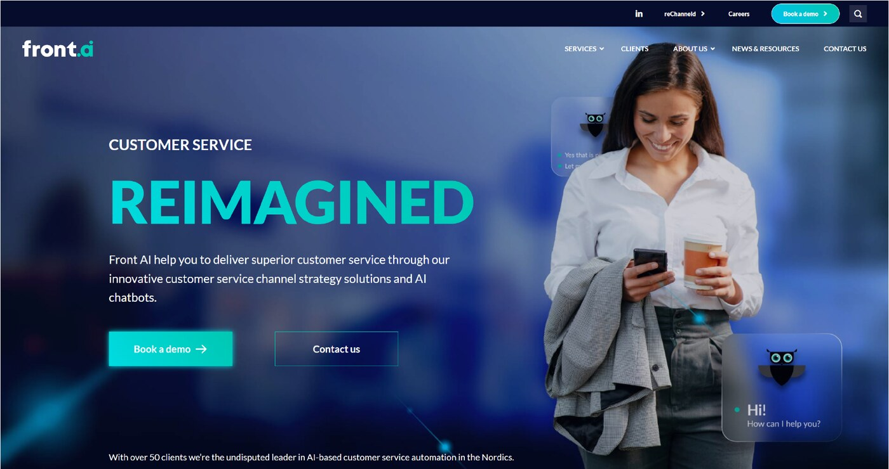
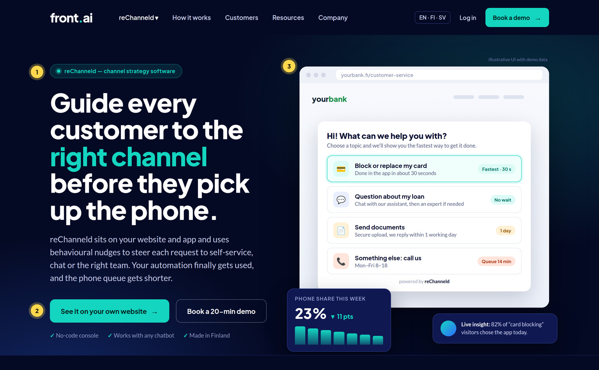
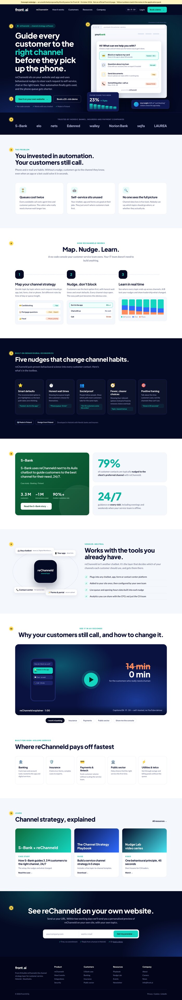

An open application from Kira Krysanov, with a company review, a homepage redesign, a LinkedIn audit, ready-to-post content, a Q4 content calendar and explainer video concepts for reChanneld.
01Why I'm writing
02Front AI today
03Homepage review & redesign
04LinkedIn audit & better posts
05Q4 content calendar
06Explainer videos
07How I can help
+Homepage concept (separate PDF)
Kira KrysanovEx-Leadoo · Ex-Videobot · Content, conversion & explainer video
kira.krysanov@gmail.com
01Why I'm writing
Hi Jari and the Front AI team,
On 1 July you completed the sale of your AI agent business to Digital Workforce and became a pure-play SaaS company built around reChanneld. That's a bold, focused move. It also means the story you tell has to change, and from the outside it hasn't changed yet.
Today front.ai still opens with “AI chatbots”, and its biggest numbers (3.5 million automated conversations, 300 FTEs saved) come from the business you just sold. Meanwhile most of your recent LinkedIn posts are about voicebots, which are now Digital Workforce's. A buyer landing on your site this week can't tell what Front AI sells.
I worked at Leadoo and Videobot, two Finnish SaaS companies that sell the same thing reChanneld does at heart: the moment when a visitor lands on a website with a need, and the page has a few seconds to guide them to the right next step. At Leadoo that meant conversational bots. At Videobot it meant interactive video. I know how this category is bought in the Nordics, how to explain an invisible product, and how to turn an explainer into pipeline.
Instead of only telling you, I've done some of the work. This pack has:
1
A new homepage
A full redesign concept that leads with reChanneld, with 12 annotated changes. It's in a separate PDF.
2
A content engine
A LinkedIn audit, seven ready-to-post drafts and a 12-week Q4 calendar starting with Customer Service Week.
3
Explainer videos
Six video concepts and a full storyboard for a 60-second reChanneld explainer that I can produce.
I'd love to help write reChanneld's next chapter, whether that's a full-time marketing and content role, working alongside your new GTM lead, or a first project to prove it. Twenty minutes over coffee at POOL would be a great start.
Warm regards,
Kira Krysanov
kira.krysanov@gmail.com
Kira Krysanov × Front AI — Open application2
02Company research
Front AI today: a new company in an old suit
A growing Helsinki SaaS company that has just reinvented itself, while its website and social channels still describe the old one.
2019Founded in Helsinki · CEO Jari Annala
€3.2 MRevenue 2025 (up from €1.9 M in 2022)
€3 M+ up to €0.6 M earn-out: AI agent business sold to Digital Workforce
2,727LinkedIn followers · 3 offices listed (FI, SE, NO)
Timeline
2019Front AI founded. It deploys chat and voice bots (boost.ai partner) for Nordic banks, insurers and payments companies.
2023–24reChanneld launched: a channel-strategy tool built on behavioural nudges. S-Bank goes live in spring 2024.
2025Revenue €3.2 M, 14 employees. “Year of Voice Automation” events with boost.ai in Helsinki and Stockholm.
1 Jul 2026The AI agent business moves to Digital Workforce: 8 employees and ~30 customer contracts.
NowPure-play B2B SaaS: reChanneld plus international growth. Hiring a GTM lead for Finland.
Revenue (€ M)
20221.9
20232.4
20242.6
20253.2
Includes the divested agent business. reChanneld's own share isn't public.
reChanneld in one sentence
A layer on the client's website and app that uses behavioural nudges (defaults, honest wait times, framing) to guide each customer request to the best channel. It comes with real-time analytics.
Proof points available today
79% of contacts typically nudged to the client's preferred channel
S-Bank: 3.3 M customers, ~1 M interactions a year; reChanneld works next to the Aulis chatbot (60k chats a month, 90%+ resolved)
“Made in Finland” and “Design from Finland” badges; tagline Better choices, happier customers
What this means for marketing
One brand story. front.ai and rechanneld.com overlap. Pick one primary story: the product.
Vendor-neutral is now a superpower. Front AI no longer sells bots, so it can partner with every bot vendor, Digital Workforce included.
The category needs explaining. “Channel strategy software” isn't a budget line yet. Education content creates demand.
International growth needs English and Swedish content that works without a sales call.
Sources: Front AI and Digital Workforce releases (1 Jul 2026), Inderes, Vainu/Finder company data, front.ai and LinkedIn as of 2 Oct 2026.
Kira Krysanov × Front AI — Open application3
03Homepage review
front.ai homepage: 12 findings
Reviewed as a Head of Customer Service at a Nordic bank would see it, on 2 October 2026.
2/10Message clarity
4/10Proof
5/10Conversion path
7/10Visual polish
4/10Accessibility
5/10Consistency
01
The page sells a product Front AI no longer offers Critical
The hero promises “AI chatbots”, the middle section is “Conversational AI”, and the services menu links to bot pages. Right below that, a news banner says the chatbot business was sold.
Lead with reChanneld everywhere. Retire or redirect the bot pages to Digital Workforce.
02
“Customer service reimagined” says nothing Critical
The headline could belong to any of 500 CX vendors. A visitor has to scroll to the second section to see the product's name.
Name the outcome: “Guide every customer to the right channel before they pick up the phone.”
03
The big numbers belong to the sold business Critical
3.5 M conversations, 300 FTEs, NPS 87, and 80% / 40% / 90% are chatbot results. Some now arguably belong to Digital Workforce, and none of them prove reChanneld.
Replace them with reChanneld proof: 79% of contacts nudged, plus the S-Bank case.
04
The product is never shown High
reChanneld is a visual widget, the easiest kind of product to demo. The page shows a blurry mock-up, a stock photo of a woman with coffee and an owl, but never the real UI.
Make the product the hero image: a real nudge widget on a bank site, with live wait times.
05
Seven different calls to action High
“Book a demo”, “Contact us”, “Get demo!”, “Learn more”, “Learn about Gen AI”, “Get started now” and a newsletter form all compete. None of them offers anything low-commitment.
One primary CTA (“See it on your own website”) and one secondary (“Book a demo”).
06
The explainer video is buried and sends people to YouTube High
The animated reChanneld video sits halfway down the page, with YouTube branding and “Watch on YouTube”, which takes visitors off the site.
A new 60-second explainer, hosted natively with EN, FI and SV captions, placed right after the proof.
Kira Krysanov × Front AI — Open application4
03Homepage review, continued
07
Unsupported superlatives Medium
“Undisputed leader”, “Best Conversational AI service provider” and “Most project deliveries in the Nordics” have no source. Nordic buyers are sceptical of hype, and after the divestiture these claims aren't accurate either.
Swap the claims for specifics: named customers, a third-party quote, “Made in Finland”.
08
Facts that contradict each other Medium
One line says “Front AI operates in Finland, Sweden and Denmark”, but the footer lists offices in Finland, Sweden and Norway. The footer still describes Front AI as “Conversational AI”. The product name is written reChanneld, RECHANNELD and Rechanneld.
A one-page messaging and style guide, applied across the site and LinkedIn.
09
The logo wall has no context Medium
Eight logos with no story, and it's unclear which of them use reChanneld and which were bot customers who moved to Digital Workforce.
Show only reChanneld customers, and link each logo to a story or quote.
10
Low contrast and small, thin text Medium
Light-grey, thin text on navy (the feature descriptions, the footer) likely fails WCAG AA. That matters to banks and the public sector, who must meet the European Accessibility Act.
Body text at least 16 px, contrast of at least 4.5:1, heavier font weights.
11
Mixed languages, no language switcher Low
A Finnish-language event card sits on the English homepage, and Swedish buyers get no Swedish content, even though Sweden is a growth market.
An EN/FI/SV switcher, with the hero, video captions and case study in all three.
12
Nothing for the visitor who isn't ready yet Low
The only options are a demo or the newsletter. There's nothing for a CX lead who is building a business case: no playbook, no ROI calculator, no template.
A “Channel Strategy Playbook” and a personalised preview as lead magnets.
Before → after: the first screen

Now: generic headline, stock photo, sold product

Concept: product, outcome and one clear CTA
Kira Krysanov × Front AI — Open application5
03Homepage redesign concept

One product, one story, one next step
The full page is in Front-AI-Homepage-Concept.pdf (1440 px, high resolution). Each yellow number on the page matches one of these notes.
1
Outcome headline. Names the job, the product and the benefit in the first five seconds. Fixes findings 01 and 02.
2
One primary CTA: “See it on your own website”. Lower commitment than a demo, and it creates a natural sales follow-up. Fixes 05.
3
The product is the hero. A realistic nudge widget showing smart defaults and honest wait times, with a live-analytics card next to it. Fixes 04.
4
Logo wall limited to reChanneld customers (to be verified with the team). Fixes 09.
5
The problem, in the buyer's words. “You invested in automation. Your customers still call.”
6
Map. Nudge. Learn. Three steps with UI snippets, so the product is understood without a call.
7
The behavioural science, made concrete. Five nudges with real UI copy. This is the moat, so it gets its own section.
8
reChanneld proof only. The S-Bank case and the 79% figure replace the chatbot statistics. Fixes 03 and 07.
9
Vendor-neutral positioning. “Works with any chatbot, including boost.ai and Digital Workforce” turns the divestiture into a selling point.
10
Native explainer with industry chips that work as an interactive video (my Videobot background). Fixes 06.
11
Resources for the visitor who isn't ready yet: a case study, a playbook and the Nudge Lab series. Fixes 12.
12
Personalised preview form. The visitor enters their URL and gets a mock-up of reChanneld on their own site. Also: an EN/FI/SV switcher, larger type and WCAG-level contrast. Fixes 10 and 11.
Kept on purpose
The navy and teal palette, the front.ai wordmark and the overall dark/light rhythm. This is an evolution, not a rebrand, so it can ship in weeks on the current site.
Kira Krysanov × Front AI — Open application6
04LinkedIn audit
People and events work. Product is missing.
The 18 most visible posts on the company page, reviewed on 2 October 2026 (2,727 followers).
Post
Topic
Reactions
Year of Voice Automation, full house at Helsinki Hub
Event · voice
68
“A big day for us”: divestiture to Digital Workforce
Company news
68
Interview video: “top 3 reasons companies…”
Video · voice
40
“World's happiest country”, reChanneld visual
Culture · product
28
Interview video: “too late to catch up?”
Video · voice
27
Interview video: “where are companies losing money?”
Video · voice
26
Schibsted VoiceBot, “35% of calls. One issue. One fix.”
Video case · voice
24
Traficom repost (Finnish)
Repost · voice
20
Fintech Landscape of Finland repost
Repost
18
Nudging event in Stockholm
Event · reChanneld
13
Hiring: GTM Finland for reChanneld
Hiring
12
Digital Workforce acquisition repost
Repost
8
about the divested agent / voice business about Front AI now or reChanneld
What works
Real people and full rooms. Event recaps and people moments get 2–5 times the median.
Short vertical interview clips with burned-in captions are consistent performers (24–40).
Sharp hooks like “35% of all calls. One issue. One fix.” are exactly the right style.
Honest company news lands well (68 on the divestiture post).
What's missing
About 70% of the content is about voicebots and bots, which now belong to Digital Workforce.
reChanneld barely appears. No post explains what it does or shows the UI.
Reposts with one-line captions (“Thank you boost.ai and congratulations…”) give away reach.
No formats built for reach: no carousels, polls, newsletter or recurring series.
No posting rhythm. There are gaps of several weeks since July.
The page category is still “IT Services and Consulting” instead of Software Development.
Strategy in one line: keep the people-first, event-led energy, and point all of it at one product and one idea: customers choose better channels when you nudge them.
Kira Krysanov × Front AI — Open application7
04Better posts, ready to publish
Seven drafts in Front AI's voice
Hook in the first two lines (before “…more”), a single idea, links in the first comment, and a native visual. All drafts can be adapted to Jari's own voice for his personal profile.
.ai
Front AIWeek 41 · Tue · Carousel, 7 slides
Positioning
In July we sold our chatbot business. People keep asking why.
Here's the honest answer:
Nordic companies don't lack chatbots. Most banks, insurers and retailers already have one, and many of them are very good.
What they lack is customers using them.
People still call about things the app could solve in 30 seconds. Not because they're stubborn, but because nobody showed them the faster way at the moment they needed it.
That moment is what reChanneld is built for. Now it's all we do.
Our former agent team has a great new home at Digital Workforce, and we're cheering them on 💚
👉 Swipe to see reChanneld in 7 slides.
Visual: carousel. 1 “We sold our chatbot business.” → 2 “Here's why.” → 3–6 problem, nudge, analytics, S-Bank → 7 “See it on your own site” CTA.
.ai
Front AIWeek 41 · Thu · Photo
Customer Service Week
It's Customer Service Week, so here's a thank-you and a promise.
Thank you to every agent who picked up the phone this year.
And the promise: channel strategy is not about keeping customers away from people.
It's about keeping your people for the conversations only humans can have. The fraud victim. The widower closing an account. The first-time home buyer at 7 pm.
Everything else can be done in 30 seconds in the app, if someone shows the way.
Tag a service team that deserves a coffee today ☕
Visual: a real photo of a client's service team (with permission) or of the Front AI team holding coffee cups. No stock photos.
.ai
Front AIWeek 42 · Tue · Poll
Engagement
Quick question for customer service leaders 👇
Your app can do it. Your chatbot can do it. Your website has the answer.
So why do customers still call?
○ They don't know it exists
○ Calling is just the habit
○ They don't trust the bot
○ Self-service can't solve it
We'll share the results, and what we see in the data, next week.
Follow-up: a results post on Thursday of week 43 that explains which nudge fixes each answer. It's a natural sales conversation starter in the comments.
Kira Krysanov × Front AI — Open application8
04Better posts, continued
.ai
Front AIWeek 43 · Tue · Vertical video, 45 s
Nudge Lab #1
The most powerful sentence in customer service is five words long:
“Current wait time: 14 minutes.”
It isn't a barrier. It's information. When customers see the queue next to “Do it in the app, 30 seconds”, many of them happily choose the faster path, and they feel good about it because it was their choice.
That's a nudge: you don't close channels, you make the better option obvious.
Nudge Lab, episode 1 of 5. Which principle should we cover next? 👇
Visual: a presenter on camera plus a screen recording of the reChanneld widget, burned-in captions in the Front AI style seen in your current videos.
.ai
Front AIWeek 48 · Tue · Carousel
Black Friday
On Friday your phone queue will tell you exactly where your channel strategy breaks.
Peak days don't create new problems. They make the existing ones louder.
Three things you can still do this week:
1️⃣ List your top 10 contact reasons from last November
2️⃣ For each one, write down the fastest channel that can actually solve it
3️⃣ Put that option first on your contact page, with a real wait time next to the phone number
That's a channel strategy. Ours just does it automatically, in real time 😉
Want the template? Comment “PEAK” and we'll send it.
Visual: a 5-slide checklist carousel. Comment-to-get drives reach and gives sales warm leads.
.ai
Front AIWeek 44 · Tue · Document post
Proof
3.3 million customers. About a million contacts a year. One question: where should each one go?
S-Bank already had a strong chatbot: Aulis handles 60,000 conversations a month and resolves over 90% of them.
The challenge was getting the right customers to Aulis, and the right ones to a human.
Since spring 2024, reChanneld has guided S-Bank's customers to the best channel for their need, 24/7.
How they set it up, in 6 slides 👉
(Full case in the comments.)
Visual: a PDF carousel in S-Bank green with Front AI navy. If possible, add a short quote from S-Bank's CX lead, with their approval.
Kira Krysanov × Front AI — Open application9
04Better posts, continued
.ai
Front AIWeek 47 · Thu · Text + image · FI
Finnish market
Asiakaspalvelun jono ei ole resurssiongelma. Se on ohjausongelma.
Suurin osa soitoista koskee asioita, jotka asiakas hoitaisi sovelluksessa puolessa minuutissa, jos joku näyttäisi tien oikealla hetkellä.
Lisää agentteja ei korjaa tätä. Parempi ohjaus korjaa.
reChanneld näyttää asiakkaalle nopeimman tavan hoitaa asia ja kertoo rehellisesti puhelinjonon pituuden. Valinta jää asiakkaalle, ja useimmiten hän valitsee nopeamman tien.
Paljonko teidän soitoistanne voisi hoitua digitaalisesti? Kerro kommenteissa 👇
Visual: a split image: “14 min” queue vs “30 s” app. Publish an SV version for Sweden in the same week.
Before → after: two real posts
Before:“Thank you, boost.ai and congratulations, Digital Workforce Services Plc, and the whole ex-front team!” (repost, 13 reactions)
After: “Our former team is nominated for Innovation Partner of the Year at BoostCamp 🎉 Proud of you. Also proof that Nordic customer service AI is world-class. Next up for us: making sure customers actually find those great bots. That's reChanneld.” It celebrates the team and bridges to the product.
Before:“Happy Holidays! As the year ends, it's time to say a big thank you…” (generic image)
After: “While you're off over the holidays, reChanneld works the night shift 🦉 It guides customers to the right channel 24/7, so your team comes back in January to a shorter queue. Thank you for an amazing 2026.” Same owl, now with a product point.
House rules for every post
Hook in the first two lines, one idea per post
Links go in the first comment, never in the body
Every 3rd post shows the product UI
Real people over stock photos, always
Spell it reChanneld, every time
Team members re-share with their own comment within 1 hour
Kira Krysanov × Front AI — Open application10
05Content calendar · Q4 2026
12 weeks: reposition, educate, convert
Rhythm: 2 company posts a week (Tue + Thu, 8:30 EET) · 1–2 posts from team members · Nudge Lab episode every other week · monthly newsletter · 1 webinar. CarouselVideoText/imagePollDoc/lead magnetEvent
October · “The new Front AI”
Week
Theme
Tuesday
Thursday
Team / founder
Web, video & other
W415–9 Oct
Customer Service Week + repositioning
Car“We sold our chatbot business. Here's why.”
ImgCustomer Service Week thank-you to agents
Jari: personal story of why we focused
New hero and messaging live; LinkedIn page category and About updated
W4212–16 Oct
Why customers still call
Poll“Why do your customers still call?”
Txt“Phone is a habit, not a preference”
GTM lead: hello post (“what I'll fix first”)
Hero explainer: script and storyboard approved
W4319–23 Oct
Nudge Lab #1
VidNudge Lab ep. 1: honest wait times
CarPoll results + which nudge fixes each
Designer: “how we design a nudge”
Newsletter #1 “Channel Strategy Notes”
W4426–30 Oct
Proof: S-Bank
DocS-Bank case in 6 slides
Vid30-s clip: the widget on a bank site
CS lead: 3 lessons from going live
S-Bank case landing page; retargeting ad to site visitors
November · “Educate the category”
Week
Theme
Tuesday
Thursday
Team / founder
Web, video & other
W452–6 Nov
Explainer launch
VidPremiere: “Why your customers still call” (60 s)
CarMap → Nudge → Learn in 3 slides
Jari: “What 5 years of chatbots taught us”
Video on homepage, EN/FI/SV captions; sales e-mail version
W469–13 Nov
Nudge Lab #2 + webinar invite
VidNudge Lab ep. 2: smart defaults
EventWebinar invite: “Peak season without the queue”
Everyone: personal invite + 1 line on why
Swedish post + SV landing page
W4716–20 Nov
Peak-season prep
Car“Before Black Friday: 5 nudges”
FI“Jono ei ole resurssiongelma…”
Stockholm lead: Swedish market view
Webinar (avoid Slush days); recording edited into 3 clips
W4823–27 Nov
Black Friday
Car“Your queue will tell you…” (comment PEAK)
VidWebinar highlights, 60 s
CS lead: “what we watch on peak day”
Newsletter #2; PEAK template sent to commenters
Kira Krysanov × Front AI — Open application11
05Content calendar, continued
December · “Plan 2027 with us”
Week
Theme
Tuesday
Thursday
Team / founder
Web, video & other
W4930 Nov–4 Dec
Myth-busting
Car“5 myths about call deflection”
VidNudge Lab ep. 3: social proof
Product: what's new in reChanneld
Myths turned into a blog post (SEO: “call deflection”)
W507–11 Dec
2027 budgets
DocChannel Strategy Playbook + template
ImgCustomer quote card (micro-case)
Jari: “3 questions to ask before 2027 CX budgets”
Playbook gated on the site; LinkedIn lead-gen ad
W5114–18 Dec
Year in review
Car“Our 2026 in 6 numbers” (real figures)
ImgTeam photo, people-first thank-you
Everyone: 1 lesson from 2026
Newsletter #3: year in review
W5221–23 Dec
Holidays
Vid“reChanneld works the night shift 🦉” (10-s loop)
Off
Off
Q1 plan: Nudge Lab eps. 4–5, Swedish case
Q4 targets (proposed)
Metric
Now
31 Dec
LinkedIn followers
2,727
3,300
Avg. engagement rate per post
~0.7%
2%+
Posts about reChanneld
~10%
80%+
Explainer video completion
—
40%+
Webinar sign-ups
—
80
Demo / preview requests from content
?
4 / month
“Now” is estimated from public reaction counts. The baseline would be confirmed from page analytics in week 1.
Four recurring formats
🧪 Nudge Lab
A 45-second vertical video every other week, one behavioural principle per episode. It builds the category and the brand at the same time.
📊 Channel Strategy Notes
A monthly LinkedIn newsletter, which notifies all followers. One insight, one customer story, one tip.
🎤 Floor interviews
Keep the interview clips that already work, now asking CX leaders about channel choice instead of voicebots.
🧩 Teardown Tuesday (Q1)
A friendly look at one public “contact us” page (with permission) and how a nudge would improve it.
Kira Krysanov × Front AI — Open application12
06Explainer videos
Six videos that sell reChanneld while the team sleeps
reChanneld is a product people get the moment they see it. Video is the shortest path from “what is this?” to “I want this on our site.”
Hero explainer
1 · “Why your customers still call” Priority 1
A 60-second 2D motion explainer: the problem, the nudge moment, the result, the console. It's the anchor asset for the homepage, sales e-mails, events and LinkedIn. It replaces the current YouTube cartoon with something shorter, sharper and captioned.
60 s · 16:9 + 1:1 + 9:16 · EN voice-over · EN/FI/SV captions · storyboard on the next page
UI loop
2 · “Map. Nudge. Learn.” product loop Priority 1
A silent, captioned 30-second screen-motion piece of the real console and widget. It loops in the homepage hero and runs as a LinkedIn video ad, with no voice-over needed.
30 s · silent · loopable · MP4/WebM
Nudge Lab
3 · Nudge Lab series (5 episodes) Priority 2
A presenter-led vertical series, one behavioural principle per episode: wait-time transparency, defaults, social proof, choice overload and framing. It builds on the interview-clip style that already performs on your page.
5 × 45 s · 9:16 · filmed in one shoot day
Interactive
4 · Interactive guided demo My Videobot speciality
A branching video on the homepage. The visitor picks “banking / insurance / payments / public sector” and gets a tailored 40-second path with relevant nudges, ending in the right CTA. The format demonstrates the product's own idea: guide people with smart choices.
1 intro + 4 branches · works with Videobot or a similar player
Customer story
5 · S-Bank customer story Priority 2
A 90-second documentary-style case with S-Bank's CX lead (subject to their approval), plus 3 social cut-downs. Peer proof is the strongest asset for Nordic banks and insurers.
90 s + 3 × 20 s · on location in Helsinki
Your site
6 · Personalised prospect previews Pipeline
A 30-second template video showing a prospect's own website with reChanneld on top. It powers the “See it on your own website” CTA and outbound. About 20 minutes per prospect once the template exists, and it's how Leadoo- and Videobot-style teams book meetings.
Template + per-prospect screen capture · for sales
Kira Krysanov × Front AI — Open application13
06Storyboard · Hero explainer, 60 s
“Why your customers still call”
Style: flat 2D motion in Front AI navy, teal and white, with real reChanneld UI in a browser frame. The owl appears once as a wink. Calm, confident voice-over; Nordic, not American hype.
Visual Logo resolve with your existing tagline, and the URL field “See it on your own website”.
“reChanneld by Front AI. Better choices. Happier customers.”
Deliverables
16:9 master, 1:1 and 9:16 cut-downs, a 6-second bumper, EN/FI/SV captions (SRT), thumbnail, and a GIF for e-mail.
Process
Script → style frames → animatic → animation → sound and voice-over → captions. Two feedback rounds at each stage.
Timeline
About 3–4 weeks from approved script. That fits the week-45 premiere in the calendar if we start in mid-October.
Kira Krysanov × Front AI — Open application14
07How I can help
Three ways to work together
You're building an international SaaS story with a small team. I can be the person who makes reChanneld easy to understand, easy to want and easy to buy.
Preferred
Join the team
Marketing, content and video for reChanneld, in-house in Helsinki. I'd own the website, LinkedIn, video and demand-gen content, working hand in hand with the new GTM lead and sales.
Start with a sprint
A 30-day relaunch: new homepage copy and layout, the 60-second hero explainer, and the first 4 weeks of the content calendar. A clear scope, so you can judge the work before deciding more.
Ongoing support
A monthly retainer for video and content: Nudge Lab episodes, customer stories, prospect previews and LinkedIn management, scaling up or down with your growth.
My first 90 days
Days 1–30Fix the story
One-page messaging and style guide
Homepage relaunch (hero, proof, CTA)
Bot pages retired or redirected
LinkedIn page refresh + repositioning post
Days 31–60Show the product
60-second hero explainer + UI loop
S-Bank case page and carousel
Nudge Lab episodes 1–3
Monthly newsletter launched
Days 61–90Build pipeline
Webinar + Channel Strategy Playbook
Personalised prospect-preview videos
Swedish landing page and content
Monthly content report to leadership
Why me
Leadoo taught me how website visitors turn into conversations. Videobot taught me how video guides people to the right next step. reChanneld sits exactly where those two meet. I already speak the language of your buyers, your partners and your category.
What I bring
Explainer video scripting, storyboarding and production · B2B SaaS copywriting · LinkedIn content and social video · landing pages and CRO · Nordic market understanding.
Coffee at POOL next week?
I'd love to walk you through the concept page and hear where reChanneld is going.